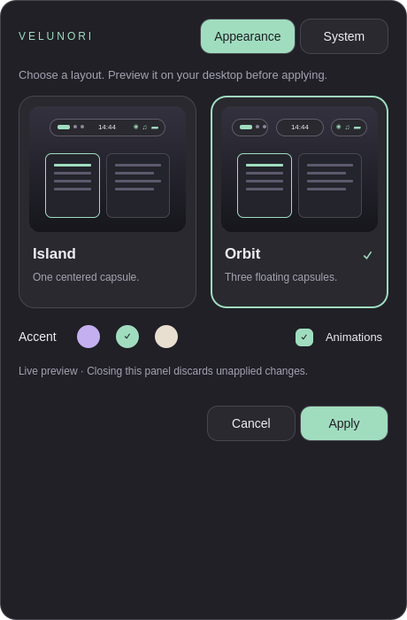
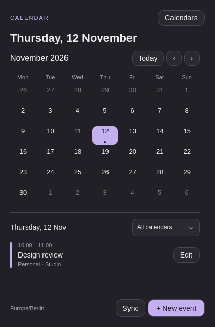
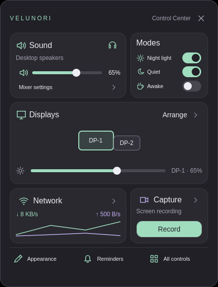
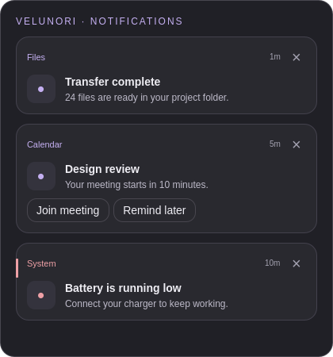
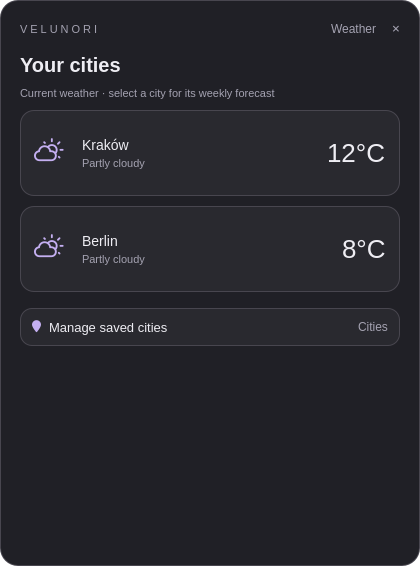
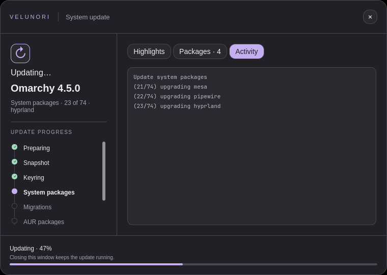
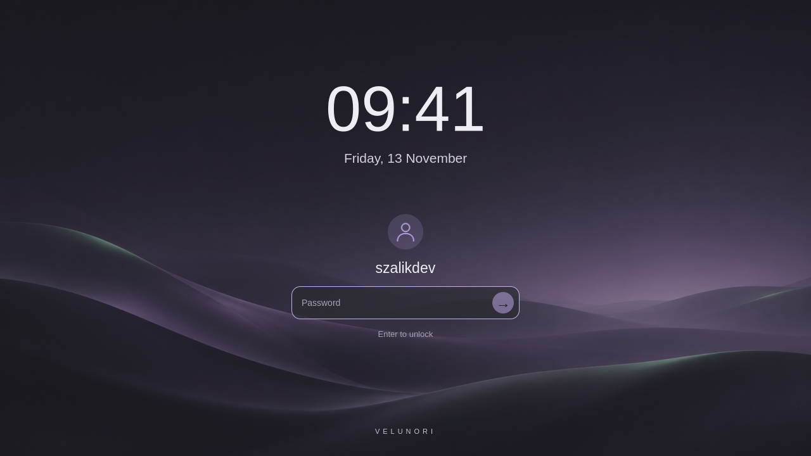
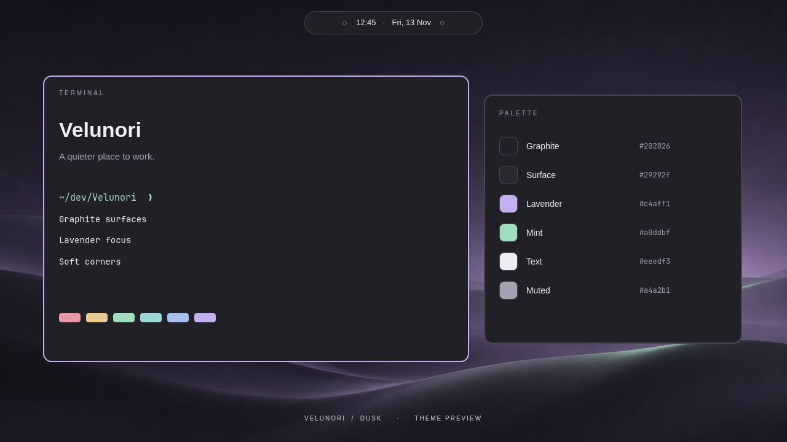

Room for your essentials.
One centered Island, or three floating Orbit capsules. Keep the widgets you use, in an arrangement that suits you.
A desktop suite for Omarchy
Floating bars. Thoughtful panels.
A desktop that feels like one place.
Open source · Nine components · One suite


Space to
just be.

Dusk / The Velunori themeIsland layout with Lavender bar accent.
Familiar foundations. A different feeling.
A shared palette and a little more breathing room,
from your first click to your last notification.
One centered Island, or three floating Orbit capsules. Keep the widgets you use, in an arrangement that suits you.
Graphite surfaces, soft corners, and Lavender, Mint or Pearl accents bring the bar and panels into the same visual language.
Install the coordinated suite or choose individual components. Your Omarchy foundations stay underneath.
02 / The everyday, considered
Real component previews,
rendered with sample data.

A month at a glance, your selected day's agenda, and editable local calendars. Connect Google or iCloud when you choose.
Cloud sign-in and writes still need live-account verification. See the calendar guide.

Sound, displays, network, capture, reminders and appearance. Everyday controls stay together, with detail pages inside the panel.

Matte cards with clear actions, plus a bell that opens what you missed during the current session.

Current conditions in the bar and a weekly forecast in the panel. Keep several cities close and choose which one belongs in the bar.

A coordinated window for Omarchy's own updater. Follow the stages, read release notes and inspect package changes as the update progresses.

A centered clock, date and password field over your current wallpaper. The presentation changes; Omarchy's session-lock and PAM service remain in place.

Graphite, lavender and mint, carried through the desktop. The Dusk wallpaper brings a quiet landscape to the background.
03 / A family of components
Each component has its own repository.
The shared library comes along automatically.
Island and Orbit bars with appearance settings.
Time, local events and cloud calendar support.
Sound, displays, network, capture and reminders.
Considered cards and session-only history.
Applications, commands and matching prompts.
Saved cities and the week ahead.
A window for Omarchy's own updater.
A quiet lock screen on Omarchy's lock service.
The palette, Dusk wallpaper and window styling.
The bundle pins every component and the shared library to tested versions.
04 / Make yourself at home
Choose your components, then download one shell installer. Shared dependencies are included automatically.
Check requirements first ↗curl -fsSL https://velunori.github.io/install.sh | bash -s -- --allReview before applying. The script checks prerequisites, prints your selection and asks you to type INSTALL. No installer plugin or bar icon is added.
Your choices matter. Floating Bars changes your bar; Dusk applies a theme and wallpaper; Serene replaces lock-screen presentation. Leave them unchecked to retain those parts of your desktop.
Ordinary copied files. No workspace shortcuts or source checkout are needed. Run without sudo; system packages are not installed automatically.
Preview release, checked on Omarchy 4.5.0-3. Other Omarchy versions are unverified.
A few things worth knowing
No. Velunori is a set of components for the Omarchy shell and a coordinated theme. It needs an existing Omarchy installation with its shell plugin API. It is not a standalone desktop environment.
Yes. Choose components above and leave Dusk and Serene unchecked. You can also install Control Center or another feature without Floating Bars; its shared library is included automatically.
Calendar data persists across sessions. Notification history lasts only for the current session. Google and iCloud accounts connect only through an explicit action in the calendar panel; installing dependencies does not sign you in.
This preview records the installed selection, build and recovery snapshot. In-place upgrades are not implemented yet. Existing Git-bundle users should keep their current update method; do not replace their checkout with this installer. Read the recovery guide before installing.
Use the bundle's issue forms for installation problems, or the affected component's repository for a component bug. For a suspected vulnerability, use private security reporting.
Open source, thoughtfully together
Report a rough edge, improve the docs, or help shape a component.